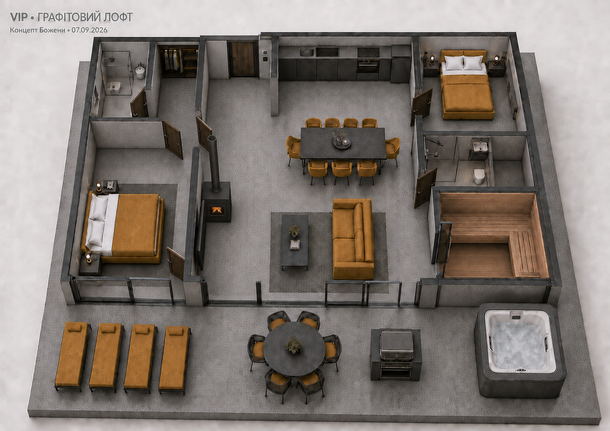

White.Lev.Travel · Білий Лев · тихе Прикарпаття / Бойківщина
Затверджений візуальний концепт · 07.09.2026

≈85–100 м² + тераса ≈30–40 м² — гіпотеза.
Попередня фінансова гіпотеза: ціна ≈$228 000 · дохід ≈$15 100/рік · дохідність ≈6,6% · окупність ≈15 років.
Суми не перераховані під оновлене оснащення; потрібен уточнений кошторис. Не робоче креслення.